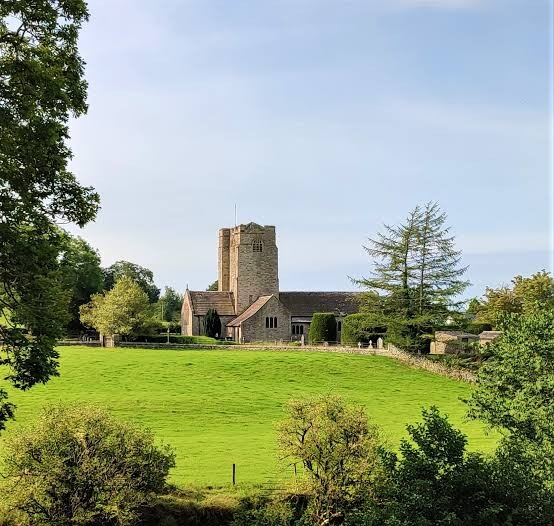

Services and worship
For information on Church Services please see the Notice Sheet – issued every Friday – Notice Sheet
Further information on worship is available at the Church in and around Kirkby Lonsdale website – KL Church
The wider parish
St Bartholomew’s forms part of the ecclesiastical parish of Kirkby Lonsdale. Please use this link for – Parish information
Safeguarding
Please use this link for information on – Church Safeguarding
Our building
Our Statement of Significance is at the following link.
Bell ringing
St Bartholomew’s has a very active bell ringing group which practice on Thursday evenings. For more information please email – bells@barbon.org.uk
